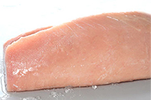
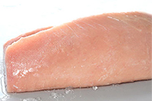

Wild Albacore Tuna is noted for its white, firm meat and delicate flavour. They are 3-4 year old fish harvested by hook and line. Tuna can be seared, barbecued, baked, steamed and fried, as well as cured in citrus juice or rolled au naturel in a favourite sushi recipe. Before cooking, tuna should be thoroughly thawed. With a mild taste and a lovely colour that turns from rosy pink to ivory white when cooked.
Nutritionally, British Columbia Albacore Tuna is 100% wild food, high in protein, low in carbohydrates and very high in Omega-3 fatty acids (2.1 grams per 100 grams) and high in total fat (7.2 grams per 100 grams) as well as rich in minerals. They are also packed full of selenium, a heavy-hitting mineral antioxidant that is lacking in most North American diets due to its depletion in the soil by modern agricultural techniques.
- Wild Albacore Tuna has been listed as a "Best Choice" seafood product on Canada's Seafood Guide, www.seachoice.org
- The David Suzuki Foundation has approved Wild Albacore Tuna fishery as being sustainable
- In 2006, Wild Albacore Tuna was accepted by the Ocean Wise® Program of the Vancouver Aquarium
- The Monterey Bay Aquarium also approves troll-caught Albacore tuna as being environmentally friendly on their "Best Choice for a Healthy Ocean" list


 

*All of our products are 100% wild and harvested from the pristine coastal waters of British Columbia. We provide sustainable seafood that is flash frozen at sea ensuring premium quality products. Our products are Ocean Wise® approved which means they are recommended by the Vancouver Aquarium as an ocean friendly seafood choice.